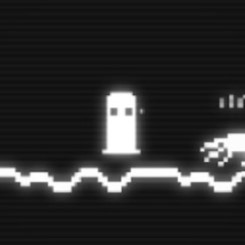
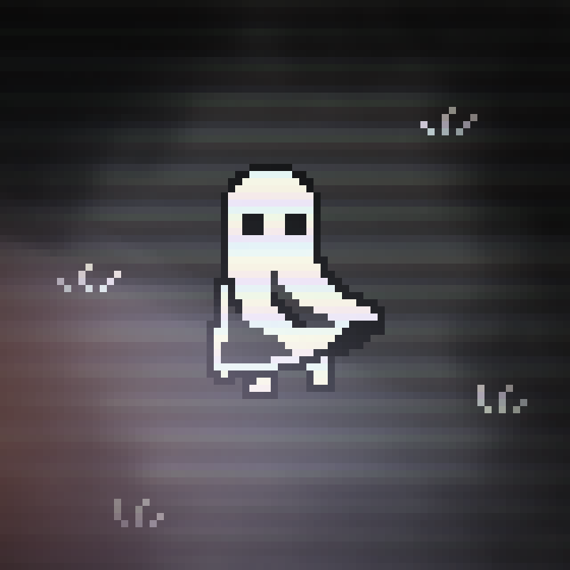
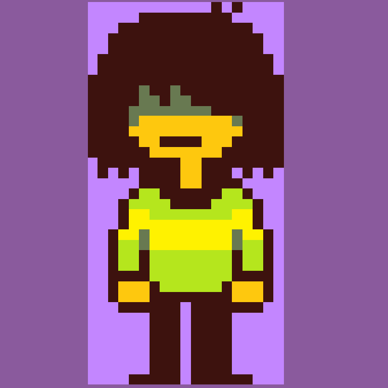
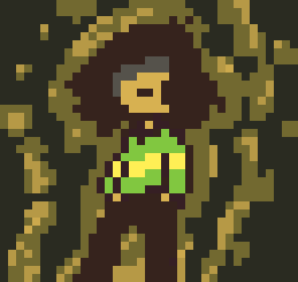
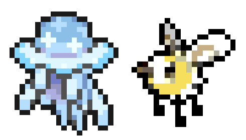
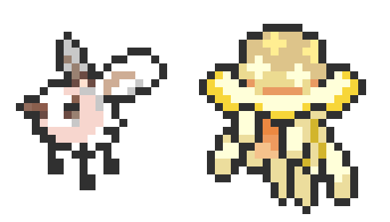

210 - Creating Digital Art
Navigation
Key Concepts
(I) - Discussing some key concepts in making digital art, and exploring their use in video game creation.
Pixel Art
Pixel art is a form of digital art that utilises low resolutions and limited colour palettes in order to create artwork that has a noticeably sharp appearance. One of the major themes and principles found in pixel art is working creatively with limitations, a trait it shares with game design. One will find this type of art most frequently in video games, as it's one of the most accessible and least time-consuming ways to create graphics that look good and have a distinct visual style, without sacrificing a game's performance. Where other types of media may utilise pixel art primarily for the blocky aesthetics or to achieve a retro vibe, game creation tends to call for a large number of moving parts and assets, which all need to fit well with each other and be fairly easy to replace or change, all things that make pixel art an ideal choice. At one point in time, pixel art was even the only feasible way to create graphics for games, due to hardware limitations of the era; and all the reasons it was used back then still have value today, hence pixel art’s maintained popularity in modern game design.
Concept Art
Conceptual art is a vital part of developing media. The term refers to any type of visual art that has a focus on accurately conveying a concept, style or design draft rather than being simply a one-off piece. It has a place in many types of creative visual media, from filmmaking to comics. Within concept art is usually where you'll see the core design features, atmosphere and style of a game or piece of media take shape. It essentially serves as a visual plan for media; to get the visuals of a character, environment, species etc. at least mostly figured out before jumping straight in and potentially wasting a lot of time and resources to make entire rigged and textured models or sprite sheets for designs that don’t fit into the final product.
Level Design
An often overlooked aspect of art & design, level design is a video game specific term, though it follows and utilises some similar conventions as composition and colour theory does in other mediums. Level design refers to the process of creating areas, or 'levels', in games. This is a strategic kind of design, where one has to make sure someone playing their game is going to understand the level they've been put in. Many different methods are used to construct good levels, like arranging objects in an area to lead the eye and gently inform the player of what a specific location means, using bright colours to signal an exit or important items, or subtly discouraging the player from places they can't enter. This is vital for game design as exploring and interacting with levels is the primary way your players are going to experience your game - particularly in level-centric games like Super Mario or those that heavily feature exploration, the design of levels can make or break a game.
(II) - Describing and defining the different elements of art.
Line
One-dimensional marks that span a space between two points. This element can be used to indicate direction, composition, or shape, and helps to lead the eye around a piece. A line can be either 'implied' through other elements or a piece's arrangement, or be 'actual', explicit lines like those found in writing or cartoons.
Shape
A shape is a two-dimensional object or area in art, typically defined using lines. The simplest way to identify shapes in art is to blur your eyes; areas of the composition with similar colour or value will become more apparent. Unlike form, a shape's only dimensions are height and width. Geometric, outlined shapes are the most obvious example of this element, but shapes can be irregular and can even consist of multiple figures or objects.
Value
Despite arguably falling under the element of colour, value is also its own element of art, as value is uniquely important in terms of making well defined lines, shapes, space and even texture. Value is what our eyes use the most when it comes to perceiving the world. The eye looks for silhouettes or shapes, and uses value to locate them, before then taking in things like saturation, hue, and smaller details. It's possible to use this, ideally in conjunction with other techniques and elements in order to create a visually striking piece or to help portray a certain mood, such as making a spooky atmosphere by using mostly low values, broken up with a small or distant light source such as a candle.
Form
Form is a similar element to shape, instead referring to a three-dimensional object or area, with the added dimension of depth. As with shape, form does not have to be regular or organised, and can be highly abstract. Forms are defined by their dimensionality that allows for multiple viewing angles of a piece, along with being visibly distinct aspects of a piece. Once an element exclusive to physical/traditional mediums such as ceramic sculptures, the birth of 3D modelling software has allowed forms to be utilised even through digital art.
Space
This element refers to the use of area within a work of art, such as the distance between, around, and within objects in a piece which can be used to create a feeling of depth and perspective. There are two types of space in art: positive, and negative. Negative space describes the space between and around the primary subjects in a piece, while positive space refers to the area said subjects take up themselves. Each has a different effect in a piece, and creative use of negative space can lead to much more visually interesting works when done effectively.
Colour
Colour is a combination of three properties: hue, saturation (a.k.a. chroma/intensity), and value (a.k.a. luminosity/lightness). Hue is what people primarily think of when describing colours, such as red, blue, green etc. Saturation measures the strength of a colour, with low saturation colours being closer to grey and high saturation ones being very bright. Value describes how dark or light a given colour is, or the perceived lightness of different colours. On a 0-100 scale, for example, a value of 0 would mean the colour indicated is pitch black, while a value of 100 would be the brightest possible. In greyscale, 100 would be pure white.
Texture
The surface quality of an artwork, an aspect of art that evokes the sense of touch. This element is often conveyed through a work's actual texture, such as sculpture being made of a smooth or rough substance. However, texture can also be implied through the use of other elements, such as by using wobbly lines to give the impression of a bumpy surface, or using value to create shading that suggests an object is wet. There are a lot of different ways to use texture even within the same medium; a painting could employ rough brushstrokes to make the strokes themselves look textured, or use globs of paint to create abstract, tactile pieces, or even create a work that subverts expectations by making concrete appear to be pillowy soft, and clouds look spiky and hard.
(III) - Exploring some terms relating to colour.
Hue
Hue essentially refers to the name of a colour (eg: red, blue, green). As opposed to referring to how bright/dark, vivid/dull, or opaque/transparent a given colour is, the hue value refers to the actual 'colour' of said colour, or rather what its place on the colour wheel would be. The hue value is usually measured on a scale of 0-360, with each change in value being comparable to moving a degree around a colour wheel; which is also how this value is often visualised in digital colour picker tools.
Saturation
Saturation is what determines how strong a given colour is. This is typically determined using a scale of 0-100, and the higher the saturation, the more intense or 'colourful' a colour will appear. The reverse is also true, in that a saturation value of 0 will result in a colour that is greyscale.
Opacity/Alpha
Opacity, or alpha, determines how opaque a digitally rendered layer, colour, image etc. is, via a scale of 0.0 to 1.0. A value of 1 will result in an asset being fully opaque, while 0 results in complete transparency; additionally, an image with an alpha value of 0.5 would be semi-transparent, but still visible.
Creating Digital Art
(I) - Re-creating 3 classic video game characters using any pixel art software.
Buddy Simulator 1984
ORIGINAL

REMAKE

deltarune
ORIGINAL

REMAKE

Pokemon
ORIGINAL

REMAKE

(II) - Re-creating 2 images of a video game character using any painting/vector drawing software.
Hollow Knight
ORIGINAL

REMAKE

ULTRAKILL
ORIGINAL

REMAKE

Review
Tutor Feedback
Overall I am extremely impressed with the quality of these images! The first 3 pixel art-style recreations use the originals more as references that Maria then expanded on with their own creative ideas. The ‘recreations’ are more like brand new pieces besides the 3rd, which is a faithful recolouring of the original. I feel that these recreations are a very impressive interpretation that improved on the originals.
The 2 full-resolution images Maria recreated are also extremely well done. Maria has re-built the images from the ground up using their tablet, and has spent a lot of time playing with the proportions and colour-elements with the end results also seeming to be an improvement on the originals - in my opinion.
My only critique from seeing these images on this assignment sheet would be that it would be a good idea for Maria to provide some links under their full-resolution image recreations so that the viewer can view these images in their native, full resolution! Otherwise I have no real criticisms regarding the images themselves.
Self Evaluation
I feel that I was able to both understand and execute the tasks provided, and was successful in recreating the images chosen for it. I was able to expand on the images used in different ways, with the final products still recognisable as being based on the original/being the same character, but with different ideas added in as well. Different unique aspects of the original images, like the painted art styles of the two full-res images and the CRT-screen look of the first pixel art image, were recreated using the different tools I had available, which worked effectively to keep the final products faithful to the originals.
At time of evaluation, I didn't add any links to view the full-resolution images uncompressed, which I agree ought to be changed in order to accurately display them without crunching down the details. If I were to do this task again, I would try to be more creative with some of the pixel art images, and try to make use of lower resolutions as it's a technique I'm not as familiar with, which could help in recreating the same vibe as the original pieces. On the other hand, I might also opt for time-saving techniques for painting the full-resolution pieces, because it took a long time to finish some parts of those. Though I might have done some things slightly differently, overall I'm very happy with the outcome of this exercise.